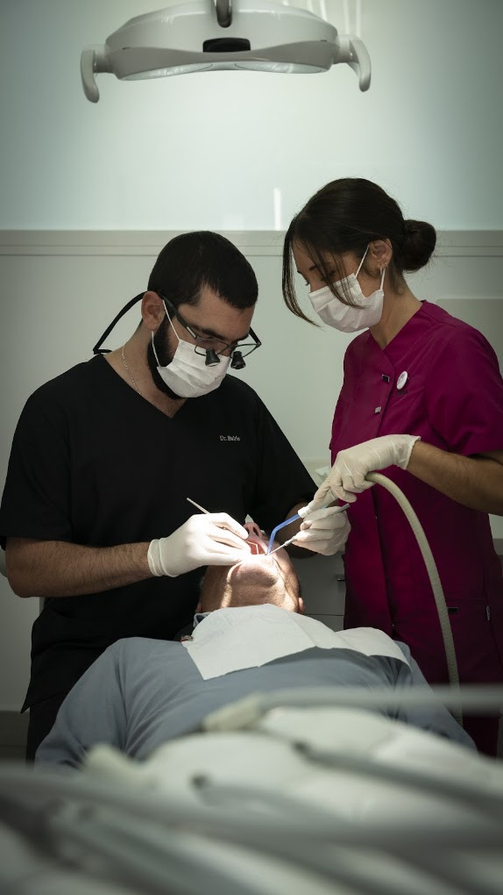

Menos tiempo sin una solución fija
En los casos indicados, la carga inmediata puede ayudar a que el paciente recupere funcionalidad y confianza en menos tiempo.
Carga inmediata en Sevilla
La carga inmediata permite colocar una restauración provisional fija en un plazo corto cuando las condiciones del caso lo hacen aconsejable. No es una promesa automática: es una decisión clínica que requiere criterio, estabilidad y una planificación rigurosa.

Qué significa
En los casos indicados, la carga inmediata puede ayudar a que el paciente recupere funcionalidad y confianza en menos tiempo.
Estudiamos cada caso con especial atención a la estabilidad del implante, la mordida y las condiciones óseas.
Si un caso no reúne condiciones, también lo explicamos. La prioridad es la previsibilidad del tratamiento.
Para quién puede ser
Personas que buscan recuperar cuanto antes una solución fija, con una buena integración estética y funcional.
Pacientes preocupados por cómo se ve su sonrisa durante el tratamiento, especialmente en zonas visibles.
Casos donde una prótesis provisional inmediata puede aportar comodidad y seguridad durante la transición.
No es solo rapidez: es una forma de trabajo enfocada a precisión y criterio.
Preguntas frecuentes
No. Depende de la estabilidad del implante, del hueso disponible y de otras condiciones concretas del caso.
Habitualmente se coloca una restauración provisional y más adelante se completa la fase definitiva del tratamiento.
No siempre. Es mejor cuando el caso está bien indicado para ello.
Siguiente paso